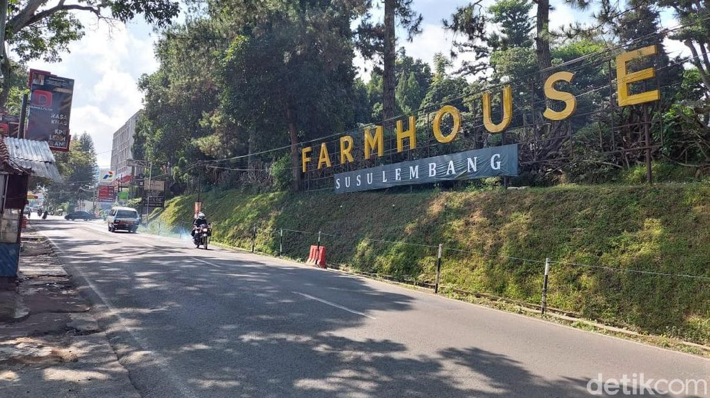

Profil Bandung

Bandung merupakan ibu kota Provinsi Jawa Barat. Kota ini dikenal sebagai
salah satu kota metropolitan di Indonesia dan memiliki berbagai destinasi
wisata, bangunan bersejarah, serta kondisi geografis yang khas.
Bandung juga dikenal dengan julukan Kota Kembang dan memiliki banyak
tempat wisata yang menarik untuk dikunjungi.
Sejarah Bandung

Kata Bandung berasal dari kata bendung atau bendungan karena terbendungnya
Sungai Citarum oleh lava Gunung Tangkuban Parahu yang lalu membentuk telaga.
Legenda yang diceritakan oleh orang-orang tua di Bandung mengatakan bahwa
nama Bandung diambil dari sebuah kendaraan air yang terdiri dari dua perahu
yang diikat berdampingan yang disebut perahu bandung.
Perahu tersebut digunakan oleh Bupati Bandung, R.A. Wiranatakusumah II,
untuk melayari Ci Tarum dalam mencari tempat kedudukan kabupaten yang baru
untuk menggantikan ibu kota yang lama di Dayeuhkolot.
Berdasarkan filosofi Sunda, kata Bandung juga berasal dari kalimat
Nga-Bandung-an Banda Indung, yang merupakan kalimat sakral dan luhur karena
mengandung nilai ajaran Sunda.
Nga-Bandung-an artinya menyaksikan atau bersaksi. Banda adalah segala sesuatu
yang berada di alam hidup yaitu di bumi dan atmosfer, baik makhluk hidup maupun
benda mati. Sinonim dari banda adalah harta.
Indung berarti Ibu atau Bumi, disebut juga sebagai Ibu Pertiwi tempat Banda berada.
Geografis Bandung

Kota Bandung dikelilingi oleh pegunungan, sehingga bentuk morfologi wilayahnya
bagaikan sebuah mangkok raksasa. Secara geografis kota ini terletak di
tengah-tengah Provinsi Jawa Barat.
Bandung berada pada ketinggian sekitar 768 meter di atas permukaan laut.
Titik tertinggi berada di sebelah utara dengan ketinggian sekitar 1.050 meter
di atas permukaan laut.
Sebelah selatan merupakan kawasan rendah dengan ketinggian sekitar 675 meter
di atas permukaan laut.
Kota Bandung dialiri dua sungai utama, yaitu Sungai Cikapundung dan Sungai
Citarum beserta anak-anak sungainya yang pada umumnya mengalir ke arah selatan
dan bertemu di Sungai Citarum.
Dengan kondisi tersebut, Bandung selatan sangat rentan terhadap masalah banjir,
terutama pada musim hujan.
Wisata Bandung
Sejak dibukanya Jalan Tol Cipularang, kota Bandung telah menjadi tujuan utama
dalam menikmati liburan akhir pekan terutama dari masyarakat yang berasal dari
Jakarta dan sekitarnya.
Selain menjadi kota wisata belanja, kota Bandung juga dikenal dengan sejumlah
besar bangunan lama berarsitektur peninggalan Belanda.
Farm House Lembang

Berada di jalur utama Bandung-Lembang, Farm House menjadi objek wisata
yang tidak pernah sepi pengunjung.
Selain karena letaknya strategis, kawasan ini juga menghadirkan nuansa
wisata khas Eropa. Semua itu diterapkan dalam bentuk spot swafoto
Instagramable.
Observatorium Bosscha

Observatorium Bosscha memiliki beberapa teleskop, antara lain Refraktor
Ganda Zeiss, Schmidt Bimasakti, Refraktor Bamberg, Cassegrain GOTO,
dan Teleskop Surya.
Refraktor Ganda Zeiss adalah jenis teleskop terbesar untuk meneropong
bintang. Benda ini diletakkan pada atap kubah sehingga saat teropong
digunakan, atap tersebut harus dibuka.
Observatorium Bosscha boleh dikunjungi oleh siapapun, tanpa tiket.
Namun, bagi yang ingin menggunakan teleskop Zeiss, wajib mendaftarkan diri.
Untuk instansi atau lembaga pendidikan, diberikan jadwal hari Selasa
sampai Jumat. Sementara itu, kunjungan individu dibuka setiap hari Sabtu.